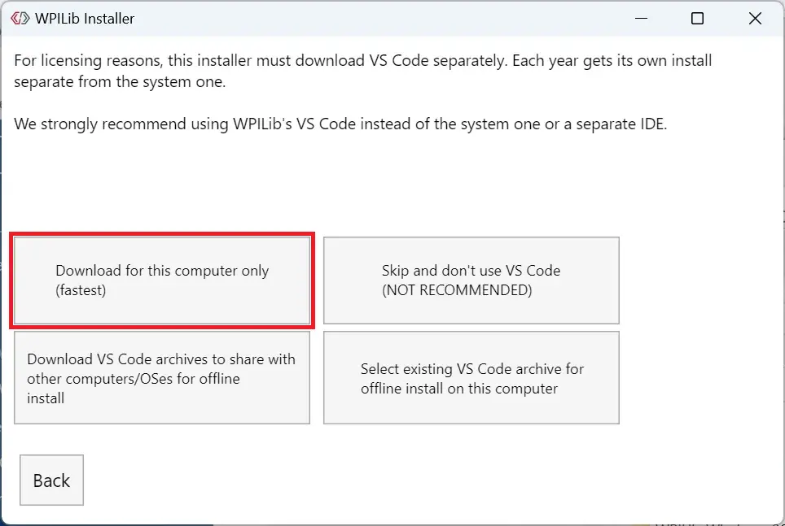
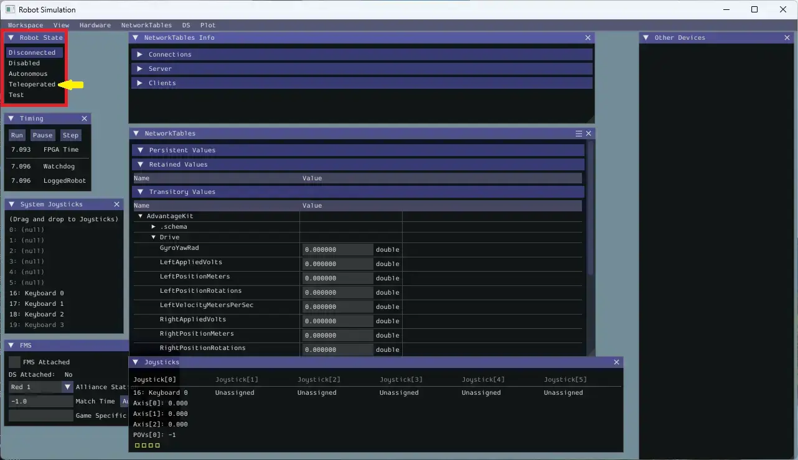
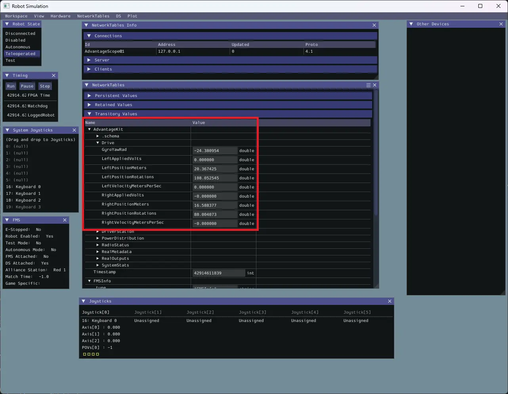
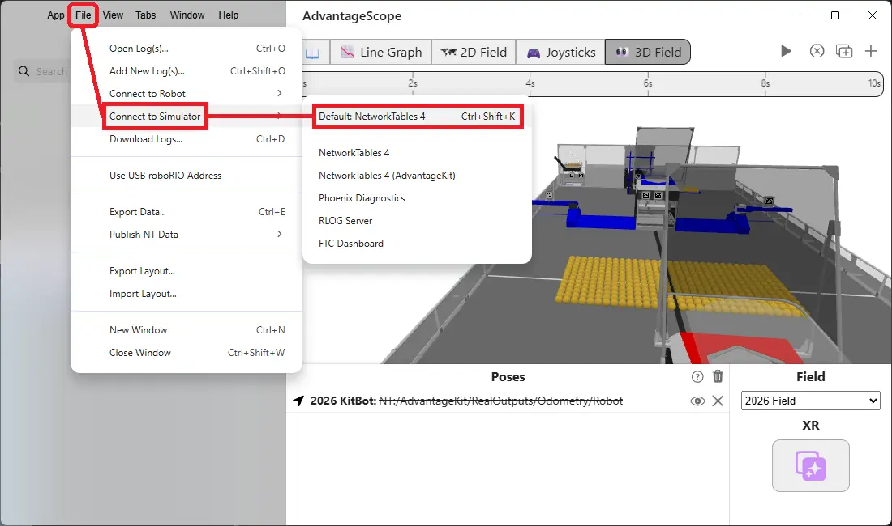
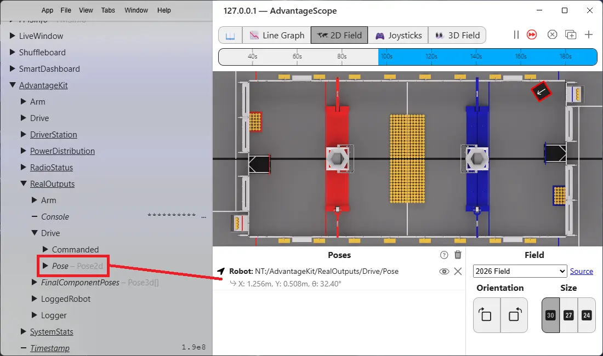
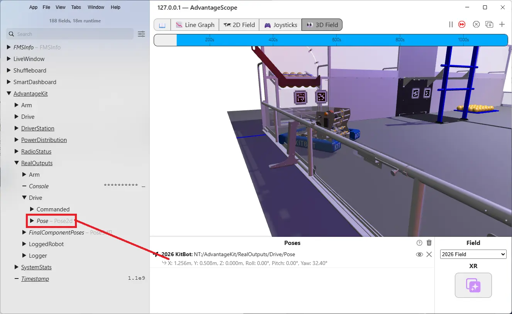
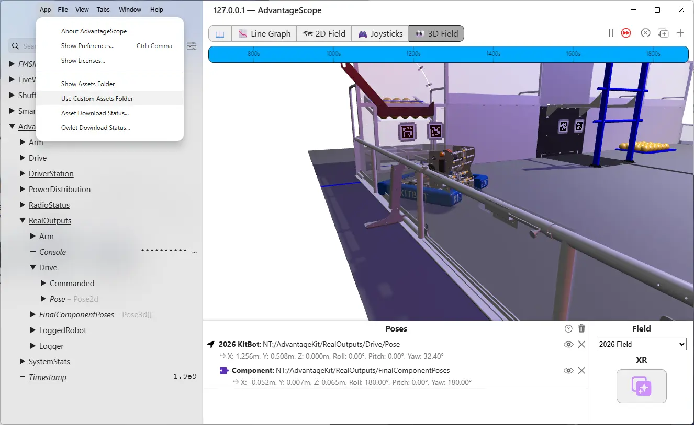
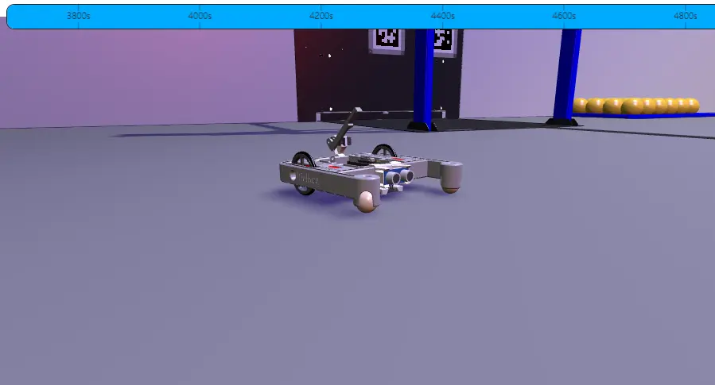

What to download
- WPILib installer — docs.wpilib.org → WPILib Installation Guide
- Git — git-scm.com/downloads
Download both before you start installing.
- WPILib installer — docs.wpilib.org → WPILib Installation Guide (download the .dmg for your Mac)
Apple menu → About This Mac. If it says Apple M1 / M2 / M3 (or any Apple chip) → download Mac (Arm). If it says Intel → download Mac (Intel).
Git comes with the Xcode Command Line Tools installed in the next step — no separate download needed.
Install WPILib + VS Code
The WPILib installer is about 2 GB. Don't cancel it if it looks frozen.
1. Right-click the downloaded .iso file → Mount (or use 7-Zip to extract)
2. Run WPILibInstaller.exe inside the mounted drive
3. If Windows asks to allow changes → click Yes
4. If SmartScreen blocks it → More info → Run anyway
5. Keep the default install path
6. When asked for install mode → select Everything

7. When asked to Download VS Code → select Download for this computer only (fastest)

8. Click Execute Install and wait
When the installer finishes, launch WPILib VS Code 2026 from your Start menu. It opens with a WPILib theme.
If you had VS Code before, they look nearly identical. Always use WPILib VS Code 2026 for this curriculum. Pin it to your taskbar.
1. Open Terminal (Spotlight → type Terminal) and run:
xcode-select --install
Click Install when prompted. This installs the Xcode Command Line Tools and Git. It takes a few minutes.
2. Double-click the downloaded .dmg file
3. Click WPILibInstaller to launch it
4. If macOS warns the app was downloaded from the internet → click Open
5. Click Start
6. When asked for install mode → select Everything
7. Click Install for this User
8. When asked to Download VS Code → select Download for this computer only (fastest)
9. Wait for installation to complete
10. After install: drag WPILib VS Code 2026 to your Dock. Eject the installer image from your desktop.
Open WPILib VS Code 2026 from your Dock or Applications. It opens with a WPILib theme.
If you had VS Code before, they look nearly identical. Always use WPILib VS Code 2026 for this curriculum. Use the one in your Dock.
Press Ctrl+Shift+X. Under Installed you should see: WPILib, Language Support for Java, Debugger for Java, Project Manager for Java.
If any are missing, re-run the WPILib installer.
Install Git
1. Run the Git installer you downloaded
2. Accept all defaults
3. When the installer finishes, open a new terminal in WPILib VS Code (Ctrl+`) and run:
git --version
You should see something like git version 2.x.x. If you get an error, close and reopen VS Code and try again.
Git was installed with the Xcode Command Line Tools in the step above. Open a terminal in WPILib VS Code (Ctrl+`) and run:
git --version
You should see something like git version 2.x.x.
The BearBots XRP code and curriculum both live in one GitHub repo. Clone it once — after that, git pull keeps everything up to date.
First time: create a GitHub account
1. Go to github.com/signup
2. Create a free account. Use an email address you'll have long-term — not a school email that expires.
3. Share your GitHub username with your mentor. You'll be added as a collaborator on the student work repo before Lesson 2.
Skip this step. Just share your username with your mentor.
First time: clone
1. Open a terminal in WPILib VS Code (Ctrl+`)
2. Run:
git clone https://github.com/Helijason/bearbots-xrp-code.git C:\Bearbots\bearbots-xrp-code
git clone https://github.com/Helijason/bearbots-xrp-code.git ~/Bearbots/bearbots-xrp-code
3. Wait for it to finish
4. Verify: open File Explorer and check that C:\Bearbots\bearbots-xrp-code exists
4. Verify: open Finder and check that ~/Bearbots/bearbots-xrp-code exists (or run ls ~/Bearbots/ in the terminal)
One-time setup: tell Git who you are
1. In the VS Code terminal, run:
git config --global user.name "Your Name" git config --global user.email "you@example.com"
Use your real name and the email tied to your GitHub account. Git remembers this — you won't need to do it again on this machine.
Git basics — your three commands
Git tracks changes as snapshots called commits. You'll use three commands every session.
Run this at the start of every session. It downloads any updates your mentor pushed since you last worked.
cd C:\Bearbots\bearbots-xrp-code git pull origin main
cd ~/Bearbots/bearbots-xrp-code git pull origin main
Tells Git which files to include in the next snapshot. The . means everything changed in this folder.
git add .
Creates a save point with a short description of what changed. Write something meaningful — you'll thank yourself later.
git commit -m "Add Scoop subsystem"
Push uploads your commits to GitHub so your mentor can review your work. You'll set that up in when you start writing your own code.
git config --global user.name "Name" | Set your name — once per machine |
git config --global user.email "e@mail" | Set your email — once per machine |
git --version | Confirm Git is installed |
git clone <url> | Download a repo for the first time |
git pull origin main | Get latest updates — run every session |
git add . | Stage all changed files |
git commit -m "msg" | Save a snapshot with a description |
git push | Upload commits to GitHub (Lesson 2) |
Install Live Server
1. In WPILib VS Code, press Ctrl+Shift+X to open Extensions
2. Search Live Server
3. Install Live Server by Ritwick Dey
Open the curriculum
1. In WPILib VS Code: File → Open Folder → navigate to C:\Bearbots\bearbots-xrp-code\Web\html-backup → click Select Folder
1. In WPILib VS Code: File → Open Folder → navigate to ~/Bearbots/bearbots-xrp-code/Web/html-backup → click Open
2. In the file tree, right-click index.html and select Open with Live Server
3. Your browser opens to http://127.0.0.1:5500 — this is the curriculum
Live Server only runs while VS Code is open. If the page stops loading, check that VS Code is still running and click Go Live in the bottom-right status bar.
Returning students: pull latest changes
1. Open a terminal in WPILib VS Code (Ctrl+`)
2. Run:
cd C:\Bearbots\bearbots-xrp-code
cd ~/Bearbots/bearbots-xrp-code
git pull origin main
This downloads any code or curriculum updates your mentor pushed since last session.
Open the project
1. In WPILib VS Code: File → Open Folder
2. Navigate to C:\Bearbots\bearbots-xrp-code\Lesson01\First Drive
2. Navigate to ~/Bearbots/bearbots-xrp-code/Lesson01/First Drive
3. Click Select Folder
4. Click Yes, I trust the authors when prompted
You should see src, build.gradle, and a .wpilib folder in the file tree.
Build the project
1. Click the WPILib hexagon logo in the top-right corner of VS Code
2. Type WPILib: Build Robot Code and press Enter
3. Watch the terminal. The first build downloads dependencies — it's slow.
When done: BUILD SUCCESSFUL
1. Are you in WPILib VS Code, not regular VS Code?
2. Did you open the folder, not a single file?
3. Is your internet working? Gradle needs it on first build.
If all three are fine, ask a mentor.
Step 1 - Start the simulator
1. Click the WPILib hexagon logo in VS Code
2. Type WPILib: Simulate Robot Code and press Enter
3. When prompted, check halsim_gui and click OK
4. Allow network access if your OS asks
5. The Simulation GUI window will appear

Step 2 - Set up keyboard driving
1. In the Simulation GUI, find the System Joysticks panel
2. Drag Keyboard 0 into the Joysticks panel (slot 0)

3. In the Robot State panel → click Teleoperated

W
Drive forward
S
Drive backward
A
Turn left
D
Turn right
The Simulation GUI doesn't show the robot moving — that's AdvantageScope's job. Drive data will update in Network Tables.

Step 3 - Open and connect AdvantageScope
1. Click the WPILib hexagon logo in VS Code
2. Type WPILib: Start Tool and press Enter
3. Select AdvantageScope
1. File → Connect to Simulator → select Default: NetworkTables 4 (or Ctrl+Shift+K)

2. The time bar at the top starts moving. The left sidebar populates with log keys.
Step 4 - Graph velocity
1. Select the Line Graph tab in AdvantageScope
2. In the left sidebar, expand AdvantageKit → Drive
3. Drag LeftVelocityMetersPerSec onto the Left Axis

4. Drag RightVelocityMetersPerSec onto the same axis
Step 5 - Drive and watch
1. Click the Simulation GUI window (gives it keyboard focus)
2. Hold W for a couple seconds, then release
3. Switch to AdvantageScope — both velocity lines should spike, then fall to zero

Step 6 - 2D field view
1. Select 2D Field from the top tabs in AdvantageScope
2. In the sidebar, expand AdvantageKit → RealOutputs → Drive
3. Drag Robot (Pose2d) onto the 2D Field view under Poses

4. Click the Simulation GUI and drive — the robot icon moves on the field
Step 7 - 3D field view
1. Select 3D Field from the top tabs
2. Drag Robot (Pose2d) from RealOutputs → Drive onto the 3D Field under Poses

3. Drag FinalComponentPoses (Pose3d) into the same poses box

4. Set the custom assets folder: App → Use Custom Assets Folder → C:\Bearbots\bearbots-xrp-code\assets\advantagescope
4. Set the custom assets folder: App → Use Custom Assets Folder → ~/Bearbots/bearbots-xrp-code/assets/advantagescope

5. Right-click the robot pose entry and select XRP Robot

6. Drive with W, S, A, D — arm with Z, X

Left mouse — rotate | Scroll — zoom | Right mouse — pan
Robot doesn't respond to keys: Click the Simulation GUI to give it focus. Make sure Teleoperated is still enabled.
AdvantageScope won't connect: Simulator must be running first.
Values aren't changing: Check that you dragged Drive/LeftVelocityMetersPerSec and Drive/RightVelocityMetersPerSec — not Setpoints.
Checklist — before you leave
- GitHub account created and username shared with mentor
- WPILib VS Code opens
- AdvantageScope opens
- Repo cloned to
C:\Bearbots\bearbots-xrp-code - Repo cloned to
~/Bearbots/bearbots-xrp-code - Live Server installed
- First Drive project builds:
BUILD SUCCESSFUL - Simulator runs and robot responds to keyboard
- AdvantageScope shows velocity values changing when you drive
- 2D and 3D field views show the robot moving
The rest of the curriculum assumes all of these pass. Use a backup laptop today and troubleshoot your own machine with a mentor before .